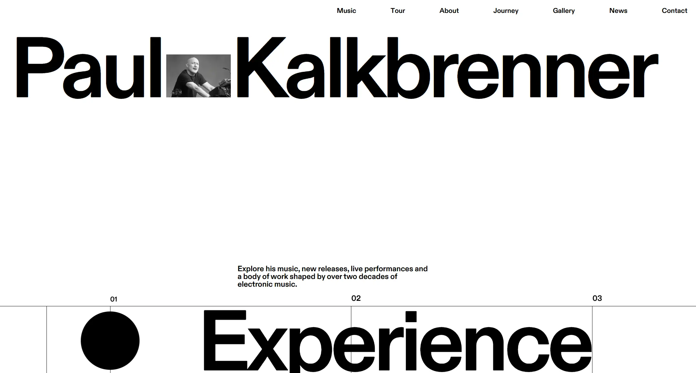

Paul Kalkbrenner
- Культура и искусство
- Музыка
- Швейцарская типографика
- Минимализм
- Действующий сайт

Что это
Официальный сайт берлинского техно-продюсера Пауля Кальбреннера: музыка, даты туров, галерея, новости, история и контакты. Швейцарский модернизм: одна вариативная гарнитура, крупные заголовки и секции-заливки, меняющие тему. Эффектный модернистский сайт берлинского техно-продюсера. Классический гротеск, модульная вёрстка, сплошные заливки и явное влияние швейцарской школы.
Что смотреть в первую очередь
Смотреть как пример швейцарской школы в чистом виде: одна гарнитура, один вес, гигантский кегль с плотным межстрочным, сетка на переменных и секции-заливки; поверх этого — собственный слой анимации на GSAP и Barba.js, включая «пиксельный» переход по волновой формуле и видео, перелетающее через Flip.
Интересные факты
- Переход между страницами сделан не конструктором: библиотека фиксирует входящий контейнер, снимает все триггеры прокрутки, после входа пересчитывает плавную прокрутку и поднимает их заново.
- Есть отдельный «пиксельный» переход по прокрутке: сетка из 25 колонок и 4 строк, панели и пиксели генерируются скриптом, а порядок появления считается волновой формулой.
- Видеоплеер работает через библиотеку, которая умеет переносить элемент: видео физически перелетает из карточки в полноэкранный слой, раскрываясь по кривой.
- Курсор с подписью «play» включается только на устройствах с точным указателем; на сенсорных экранах его нет.
- Типографика построена на одном вариативном шрифте и единственном весе: текст набран насыщенностью 700 при межстрочном 1, а заголовки — с отрицательным трекингом и кеглем до 12.5em.
- Заметный дефект контента: в копирайт-дисклеймере остался сломанный машинный перевод с повторами, а в выходных данных есть заголовок про номер VAT, но самого номера нет.
Паспорт
- Домен
- paulkalkbrenner.net
- Тип сайта
- Многостраничный
- Категории
- Культура и искусство
- Подкатегории
- Музыка
- Для кого
- Музыкантам, Дизайнерам, Обычным пользователям
- Стиль
- Швейцарская типографика, Минимализм
- Язык
- Английский
- Страна
- Германия, Берлин
- Автор
- не указано
- Год
- 2026
- Добавлен в коллекцию
- 08.10.2026
Палитра
-
#FFFFFF— 85% кадра -
#010001— 10% кадра -
#6A6A69— 1% кадра -
#999A9A— 1% кадра -
#37363B— 1% кадра
- Режим
- Светлая
- Цвет фона
- Нейтральный
Технологии
- Webflow
- Cloudflare
- GSAP 3.15.0 с полным набором плагинов
- Barba.js
- Lenis
- Собственный бандл вместо конструктора
- jQuery 3.5.1
- Свой аудиоплеер
- Внешние сервисы
- Чего нет